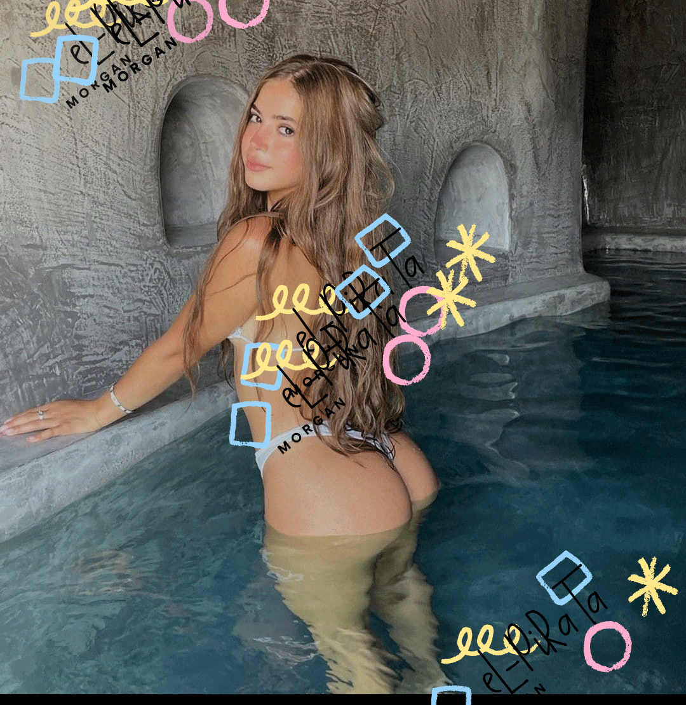
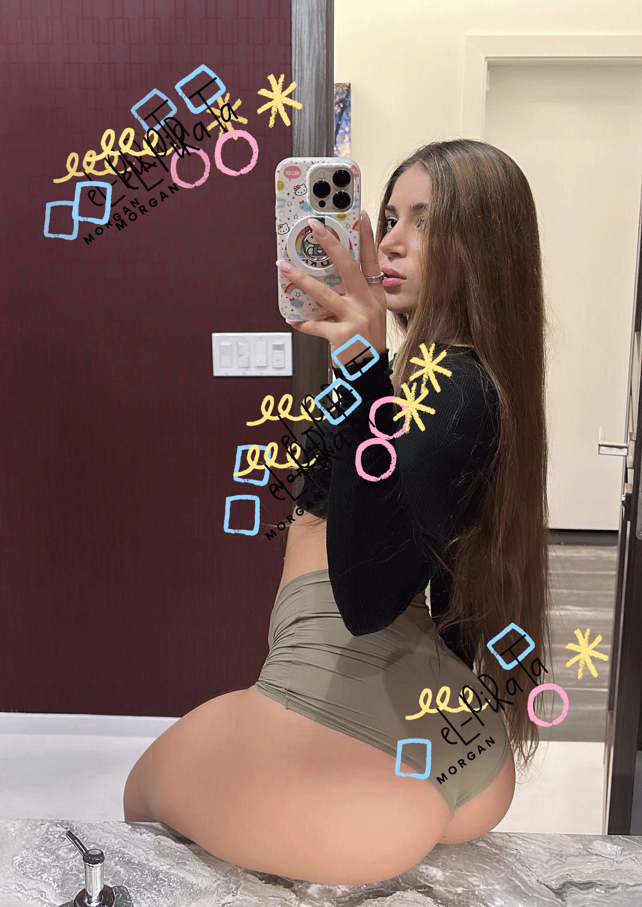
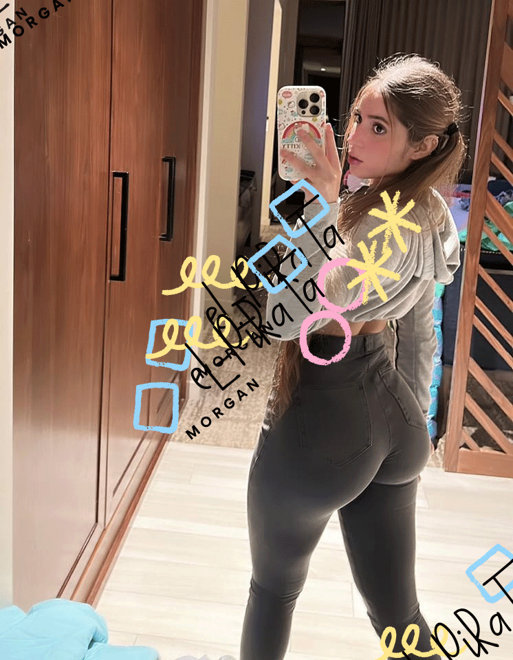
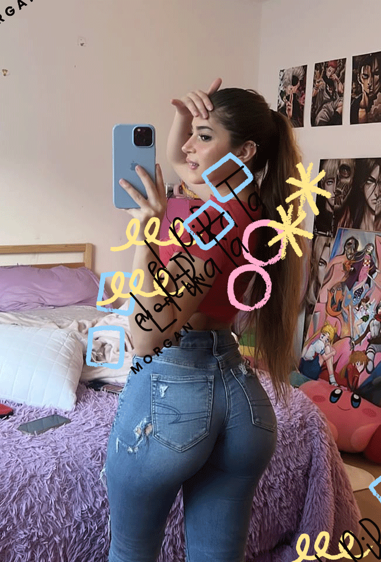

Hoy presentamos a la estupenda STEPHANIE una mujer fantástica llena de energías positivas, que contagia su espíritu alegre. Esta vez nos contara muchas cosas acerca de su pasado.
¿Cómo fue tu niñez?
Completamente diferente al de los demás niños de mi edad, en esa época las cosas eran muy distintas a las que son hoy, no existía mucha tecnología vivíamos con un estilo de vida diferente. Muchos consideran que fue una niñez estupenda. Obviamente tenia sus pro y contras como en todo.
MLa diferencia estaba en la forma en la que la vivíamos, era un mundo de rodillas raspadas, mucho fango y lo mas importante rizas y un corazón realmente contento..
¿Al día de hoy que ha cambiado en ti?
Nunca perdemos ese niño o niña interior que tenemos, solo empezamos a madurar y ver la vida de diferente manera un tanto más aburrido diría yo, pero en fin el el ciclo inevitable de la vida, todos la atravesamos.
No diría que cambie, mejor dicho, solo que veo la vida de diferente forma ya tengo mas responsabilidades, el trabajo, los estudios y la familia esto cambia totalmente la forma de vivir la vida
¿De que forma visionas tu futuro, crees en el tema esotérico?
Me siento dichosa de contar con un esposo que es mi todo, puedo contar con el en todo aspecto me apoya y estoy completamente enamorada, la vida es bonita cuando nos ofrece cosas lindas
Si, en realidad desde muy corta edad tuve esa habilidad de predecir el futuro, y creo fervientemente en ello. Considero que el cosmos esta fuertemente vinculado a nuestro destino, me encanta ayudar a las personas a predecir su futuro y me siento bien correspondida y retribuida.
¿De que forma visionas tu futuro, crees en el tema esotérico?
Me siento dichosa de contar con un esposo que es mi todo, puedo contar con el en todo aspecto me apoya y estoy completamente enamorada, la vida es bonita cuando nos ofrece cosas lindas
Si, en realidad desde muy corta edad tuve esa habilidad de predecir el futuro, y creo fervientemente en ello. Considero que el cosmos esta fuertemente vinculado a nuestro destino, me encanta ayudar a las personas a predecir su futuro y me siento bien correspondida y retribuida.
